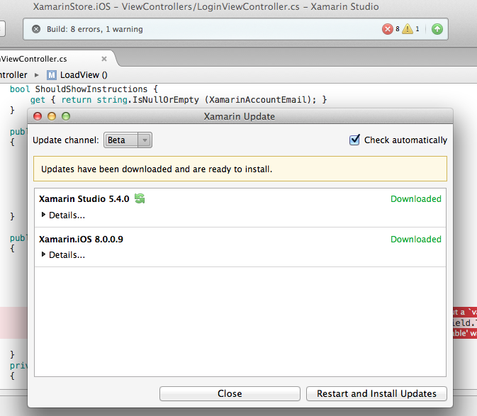
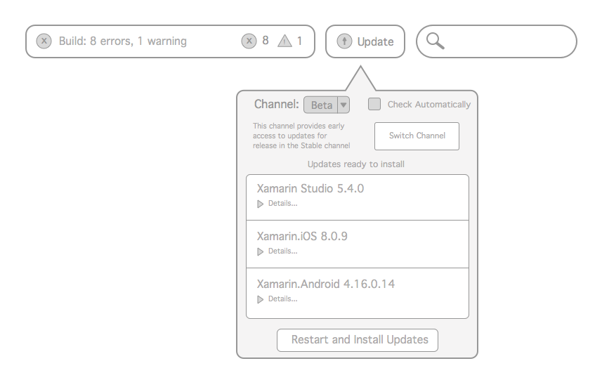

-Miguel de Icaza, CTO of Xamarin
We’ve seen Xamarin's product focus shift year-to-year in response to dynamically changing user needs.
With the addition of new services, Xamarin is getting more complex over time.
I want to evaluate the current process of updating Xamarin Studio and explore design optimizations that would contribute to a more delightful user experience.
I evaluated Xamarin Studio's update user flow and tested it against Jakob Nielsen's Ten Usability Heuristics for User Interface Design. With this data, I found three ways we can improve Xamarin's Update User Flow:
(Slide Down)
ISSUE 01: Update icon is grouped with compilation status.
SUGGESTION 01: Separate both sets of features.
ISSUE 02: Update dialog is detached from update trigger.
SUGGESTION 02: Move the update dialog closer to the button and indicate it's association with the trigger.
(Slide Down)
ISSUE 03: Icon does not provide easily accessible information - only on hover or click.
SUGGESTION 03: Have the icon paired with a progress indicator to provide the user info on the system status.
ISSUE 04: User must manually check if update is available by clicking the update icon.
SUGGESTION 04: Inform user whether or not Xamarin Studio is up to date through button.
(Slide Down)
ISSUE 05: Descriptions and status of channel versions are located in same area.
SUGGESTION 05: Keep the descriptions and statuses separate.
ISSUE 06: The up arrow icon does not universally indicate "update."
SUGGESTION 06: Use an icon more commonly associated with the "update" action. (hint: Xamarin already uses it)
The following are screenshots of a high-fidelity mockup of the simple changes to the update feature that may facilitate the experience of updating Xamarin Studio.
Created with Sketch and Framer Studio
(Slide Down)
I’ve highlighted only a few out of several problems I noticed while evaluating my own experience with updating Xamarin Studio.
These are suggestions, not solutions. Prototypes need to be designed, iterated, and tested upon until we are satisfied by our results.
We need to set up quantitative and analytical tools to measure the effectiveness of each design decision we make.
If you would like to discuss these results or see more of my findings, you may contact me at hello@aguzman.me. Other projects I’ve done are available at my website.